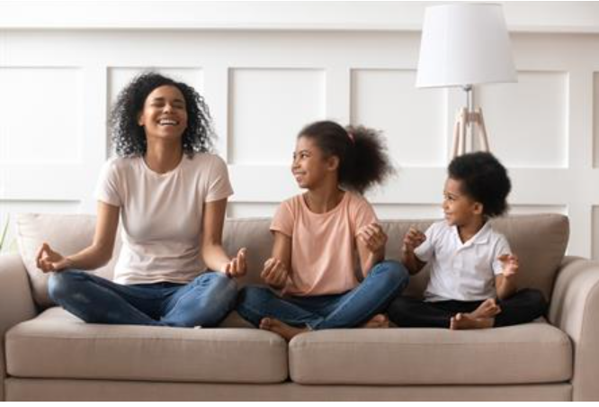
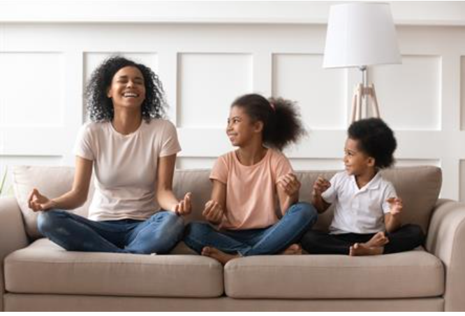

The BestFitness Club
Holistic Harmony: Nourishing Mind, Body, and Soul Through Nutrition
"Nourish to Flourish: A Holistic Guide to Nutrition for Mind, Body, and Soul" In the realm of holistic nutrition, the focus extends beyond mere food choices; it delves into nourishing every aspect of your being. Let's embark on a journey to understand and embrace the principles of holistic nutrition. ### Understanding Holistic Nutrition Holistic nutrition considers the interconnectedness of mind, body, and soul. It recognizes that the foods we consume impact not only our physical health but also our mental and emotional well-being. ### Embracing Whole, Real Foods Shift your focus towards whole, unprocessed foods. Fresh fruits, vegetables, whole grains, and lean proteins provide essential nutrients while supporting overall health. Strive for a colorful and diverse plate. ### Mindful Eating Practices Practice mindful eating to cultivate a deeper connection with your food. Pay attention to flavors, textures, and the act of eating itself. This approach enhances digestion and allows for a more satisfying and nourishing experience. ### Balancing Macronutrients Maintain a balance of macronutrients – proteins, carbohydrates, and healthy fats. Each plays a crucial role in supporting bodily functions, energy levels, and overall vitality. ### The Importance of Hydration Water is the elixir of life. Prioritize hydration to support digestion, nutrient absorption, and overall cellular function. Herbal teas and infused water can add variety to your hydration routine. ### Holistic Meal Planning Plan meals that cater to your individual needs and lifestyle. Consider incorporating a variety of nutrient-dense foods to ensure you receive a broad spectrum of vitamins and minerals. ### Customizing Nutrition for Wellness Recognize that individual nutritional needs vary. Consider factors such as age, activity level, and specific health goals when crafting a personalized nutrition plan. Consultation with a holistic nutritionist can provide valuable insights. ### Food as Medicine Explore the concept of food as medicine. Certain foods possess healing properties and can support specific health goals. Incorporate anti-inflammatory foods, antioxidants, and probiotics for optimal well-being. ### Mind-Body Connection Acknowledge the profound connection between nutrition and mental well-being. Certain foods can influence mood and cognitive function. Prioritize foods that support mental clarity and emotional balance. ### Sustainable and Ethical Choices Extend your awareness beyond personal health to consider the environmental and ethical aspects of your food choices. Opt for sustainably sourced and ethically produced foods whenever possible. ### Holistic Nutrition in Daily Life Integrate these principles of holistic nutrition into your daily life. Small, mindful choices accumulate over time, contributing to a balanced and nourished existence. Embark on the path of holistic nutrition to not only enhance your physical health but also to foster a harmonious relationship between your body, mind, and soul. By nourishing yourself holistically, you pave the way for a vibrant and flourishing life.
Wellness Waves: Surfing the Seas of Healthy Habits for a Fulfilling Life
Title: "Wellness Unveiled: Embracing Healthy Habits for a Vibrant Life" In today's fast-paced world, achieving optimal wellness is more crucial than ever. This blog serves as your guide to cultivate healthy habits that will transform your life. ### Embracing a Holistic Approach Wellness goes beyond mere physical health; it encompasses mental, emotional, and social well-being. Start your journey by embracing a holistic approach to wellness. ### Nourishing Your Body Fuel your body with nutrient-rich foods. Incorporate a colorful array of fruits, vegetables, whole grains, and lean proteins into your diet. Hydration is key, so make water your go-to beverage. ### Movement as a Lifestyle Exercise is not just a task; it's a lifestyle. Find activities you enjoy to make fitness a sustainable part of your routine. Whether it's brisk walks, yoga, or weight training, move your body regularly. ### Mindfulness and Stress Management Prioritize mental health through mindfulness practices. Meditation, deep breathing exercises, and adequate sleep are powerful tools for stress management. Create a serene space for relaxation in your daily life. ### Cultivating Positive Relationships Nurture your emotional well-being by fostering positive connections. Surround yourself with supportive relationships that uplift and inspire. Social interactions contribute significantly to overall wellness. ### Sleep Hygiene Quality sleep is a cornerstone of good health. Establish a consistent sleep schedule, create a tranquil bedtime routine, and ensure your sleep environment provides to comfotable sleep. ### Breaking Bad Habits Identify and gradually replace unhealthy habits with positive ones. Whether it's reducing screen time or managing time more effectively, small changes lead to lasting results. ### The Power of Gratitude Practice gratitude daily. Reflecting on the positive aspects of your life can enhance emotional well-being and shift your perspective toward a more optimistic outlook. ### Setting Achievable Goals Define realistic wellness goals tailored to your lifestyle. Celebrate small victories along the way, and remember that progress, not perfection, is the key to sustained well-being. ### Join the Wellness Community Connect with like-minded individuals on this wellness journey. Share your experiences, learn from others, and celebrate successes together. A supportive community can be a catalyst for positive change. Embark on this transformative journey towards wellness. By adopting these healthy habits, you pave the way for a vibrant and fulfilling life. Remember, wellness is a lifelong pursuit, and every positive choice you make contributes to your overall well-being.
Unveiling the True Essence of Fitness: Beyond the Aesthetics
In a world where television, and social media portrays the attraction of flat abs, and tall slender muscles as the most important mark of fitness, one risks falling into the trap of singly focusing on the physical aspect of fitness and forgets the real essence of what it means to be fit. Although the uneasy part is invaluable, complete fitness is matter of fact, not only referring to the physical looks, but mental, emotional and spiritual life. On this blog, we are on the quest to find multi-faceted nature of fitness, that can be explained through discussing its holistic dimensions and thus providing evidences of the power it has on our lives. To be frank, health is the maintenance of the optimal physical and mental condition as a result of the regular efforts of completing physical activities in the proper way with good nutrition. While this is highly relevant, it's worth noting that there’s no such thing as a singular approach to fitness. Each person’s pathway to fitness is individual, bearing the marks of personal desire, taste and conditions under which one walks. Be it a running marathon, yoga or just a visit to the gym, the famous saying could not be more accurate – for a fit body and mind exists an infinite and dynamic diversity of ways and means. Beside all that, physical fitness exemplifies all that is most visible – muscular strength and endurance, flexibility or cardiovascular power. Our body can be trained for better functioning and development through consistent practice of exercises that not only strengthen heart and bones but also boost our immunity, elevate mood, and enhance cognitive functions. From the point of not being exposed to many chronic diseases to living longer, the evidence of the advantageousness of physical fitness cannot be denied. Notwithstanding that, another aspect of fitness is the dedication that occurs beyond the gym, or the athletics field. Moving the body becomes as much of a lifestyle as it is a means of living. This adventure is accomplished through rejoicing in physical activity, and cultivating a profound reverence for one's body. Physical activity is just one dimension of fitness, which on the other hand can be represented in every little thing from taking the stairs instead of the elevator to cycling on a sunny afternoon. Yet, that's another cornerstone of fitness, which comes down to proper nutrition that stands behind the fuel that our bodies need to work. As our physical activities maintain balance, our body then requires a diet that is rich in vegetables, fruits, lean proteins, and whole grains which in turn also nourishes our mental well-being. Eating attentively, drinking sufficiency of water, hence responding precisely to our body’s hunger and satiety will be the attributes ensuring lifetime good health and life-longevity. Despite everything, though, fitness is not limited to only the body, for mind and spirit matter just as much. Mental fitness involves being resilient, having focus, and maintaining a state of well-being mentally and emotionally overcoming hurdles using grace and power in the process. Meditation, mindfulness and journaling may serve as useful ways to help you generate mental clarity, relieve stress and increase inner awareness so that a stronger relationship with yourself and others is supported. The same channel exists on spiritual fitness through having reasons of life, meaning, and having a connection to something greater than ourselves. No matter it is the belief in God, appreciation of nature, or our own principles or values, this spiritual wellness can give us a powerful and unforgettable feeling of deep inner pride and contentedness, with the spiritual anchor piggybacking all our lives. In addition, the process of stick to fitness is connected to the principle of self-care. In a present time when the speed of work, families and social needs are all together king in the table, choosing to be healthy and live a peaceful life is never really the first choice. And while self-care might sound egocentric, it really boils down to a meaningful contribution to our behavior. It's an investment that pays off in consideration of our long-term welfare and well-being. It is significant to provide both prevention and care for burnout. Implementing self-care measures into our routines, with physical activity, nourishing meals, or having something enjoyable as well, is the solution. We will recharge our batteries and becoming stronger when we respect our needs and accept our limits. And, we will also feel more love and acceptance of who we are. In the end, the basic idea of fitness is much more than just going to the health clubs in a pursuit of the body muscles. It's about taking the natural holistic view of our health that acknowledges our unity on all levels and rather focuses on it. Accordingly, physical activity should be regular, our bodies should be nourished with healthy foods and our mental and spiritual welfare taken care of. We can surely then achieve our full potential and be able to live life to the fullest accordingly. And hence, let's redefine the perspective of fitness, overcoming the jail of aesthetic-based ideals and creating a liberated definition of fitness which could not be associated with any appearance. Join us as we embark on this trip, respecting our own body, mind, and spirit while tapping into the inexplicable effect of fitness, confident that it will improve our lives.
Fueling Fitness: The Power of a Healthy Diet
During your fitness journey, for sure exercise is the most talked-about thing, despite the training and workouts. Nevertheless, the issue of nutrition, which is equally if not more important, is equally important and not less. A proper diet is the very basis on which the fitness ambitions are made with sufficient nutrients and energy coming from the diet to support physical activity and promote the best performance and overall wellness. This blog will be discussing the immense role that a balanced diet plays in overall fitness and we will break down the key principles that should be considered in order to optimize energy levels for success. Balanced Macronutrients: Mainly macronutrients, namely carbohydrates, proteins, and fats, form the basis of a balanced diet. All of them provide a different type of workout that is great to match a person's fitness objectives. Along with protein, fat, and vitamins, carbohydrates serve as the primary source of energy, particularly during exercise and recovery as it refuels glycogen stores. Better opt for those complex carbohydrates like the whole grain, fruits, and vegetables that for a purpose of sustained energy and nutrients. Protein is not only big part of muscles repairing and developing, but it is also important after the training. Include lean sources of protein for your body; give chicken, fish, tofu, legumes, as well as dairy into your dinners. Moreover, balance out the healthy fats as this will also help in hormone production, nutrient absorption and satiety. Try incorporating mono and polyunsaturated fat sources like avocados, nuts, seeds, and olive oil in moderation since they optimize overall health. Nutrient Density: While meeting your macronutrient needs is important still, one should keep in mind that by boosting nutrient density, the body gets all the vitamins, minerals and antioxidants needed to ensure proper functioning and good health. The most nutrient dense foods you can get should be whole and minimally processed, because they deliver essential nutrients and provide no added sugars, unwholesome fats or artificial ingredients. Cover the area of your plate with a range of brightly colored hues, as they are rich in vitamins, minerals, and phytonutrients. Balance your diet by adding lean proteins, whole grains, and good fats to complete your meals, and receive good nutrients. Hydration: Water is vital for the excellent performance and then the recuperation. Water is the main player among multiple processes in the organism that are responsible for temperature regulating, activation of joints, and providing nutrients and oxygen to cells. Aim to drink enough amounts of water daily. Frequently drink water before, during, and after any physical activity. Install this habit because it will help you to replace the fluids lost through the sweat. The optimum amount of water required for individual hydration can vary depending on factors like body size, physical activity level and prevailing climate. However, as a basic guideline, you should be passing pale yellow urine after drinking enough water. Meal Timing and Frequency: The food breaks and routine of meals and snack time may influence levels of energy, exertion, and reconstitution. To stabilize blood sugar levels and sustain energy, it is advisable to establish regular eating pattern that include snacks distributed within the day. Fill up your tank by having a well-balanced meal or snack with carbs and protein at least an hour before exercise in order to supply your body with the energy to propel your workout time. When you next work out, make sure you fuel up with a mix of carbs and protein so as to help with muscle healing and glycogen loss. Along with that, attending to your body's hunger and fullness signals is recommended, to eat when hungry and stop when you no longer feel hungry. Mindful Eating: In the ever-busy world of today one can very easily take food for granted, having a quick meal while not even noticing the type, amount and taste a person would enjoy if cared to evaluate. One of the skills cultivated in self-aware eating is mindfulness to food choices which enable one to sustain this process better. Make use of the time by relishing the flavor of each bite, mind your subjects's "tastes, textures, and scents." Sit down, eat slowly and mindfully so that your body could have its time to feel hunger and fullness, chewing your food sufficiently and tuning in to your body. By creating a closer tie with what you eat and what your body feels, this hopefully leads to a more balanced association with eating. Ultimately, diet and fitness are complementary aspects that work together to keep the body functioning at its best by providing critical nutrients and energy, optimizing performance through physical activities, and benefiting overall health. Incorporating well-balanced macronutrients, nutrient-dense foods, sufficient hydration, meal timing and frequency, as well as mindful eating will allow you to fuel your body for the success you are seeking, and break through your fitness plateaus. Take a note; the balanced diets that are rich in nutrients not only support your body to achieve fitness goals but also makes your life colorful and interesting.
Unveiling the Surprising Health Benefits of Outdoor Exercise
In our contemporary, Information technology (IT)-centred world, there is a significant chance of ending up trapped indoors most of the times of the day. Reflection of the fact remains that those who work in an office, smitten in binge watching TV programs or addicted to social media sites do so for a longer time than what is enough. Nonetheless, modern investigations claim that outdoor exercise is indeed more than just a way to complement conventional indoor workouts but can also provide a number of astonishing health effects which cannot be achieved by conventional fitness workouts. By the blog we are going to take look on the science experience outside and then you will catch the possible health advantages the outdoor sports have on physical, mental and emotional health. Vitamin D Boost: There are few workout areas more familiar than the one that can be found in the vicinity of nature. Among them we find the most widely known benefit of outdoor exercise – the amount of vitamin D it induces. The sunlight is being captured by the skin under the process of vitamin D production and the consequent duration of being in the outdoors can be enough to maintain high levels of this vital nutrient. Vitamin D happens to be a real superstar in the health field since it promotes bone health, immune function and also regulates mood. Additionally to that, it supports overall well being. Adding outdoor undertakings like walking, running, cycling, or hiking to your wellness schedule, you can both reap the rewards of vitamin D synthesis and get a sense of belongingness with the nature. Enhanced Mood and Mental Well-being: Research studies have concluded that the exposure to nature has been found to be a very positive influence on emotional and physical health. Studies show that exercising outdoors is an effective way to lessen stress hormones, lower anxiety and depression symptoms, and increase brain cognitive function and good mood. Landscapes, sounds, and even smells of nature can stimulate the senses, hence the feeling of quietness and relaxation. Besides, the bodily movement and motion involved in walking or running can lead to a meditative experience for the mind and subsequently a calm state of mind. Regardless of whether it is a vigorous walk in the park, a relaxed bicycling ride on a scenic road, or a calming swim in a natural swimming place, spending time outside for exercise can improve your mood and replenish the mind. Increased Physical Intensity: Outdoor terrain introduce a dynamic and ever-changing environment that make the physical intensity of workout more practical. While many indoor workouts focus on specific sets of muscle groups, outdoor workouts engage different parts of your body such as muscles in your legs, heels and arms that also strengthen the ability to balance, coordinate and being agile. Research results demonstrated that more calories were burned and cardiovascular health was improved if outdoor workouts - involving varied speed and intensity - were performed. Moreover, the area gives you a chance to stretch and move around naturally, not only being lively but also exciting. This guarantees your outdoor exercises to be both fun and rewarding. Connection to Nature and Community: Certainly, our modernized lifestyle frequently imposes us with a wide range of types of artificiality that make us prone to losing the connection with the natural world. Wimming in or nature is one of the ways to stay closer to the nature and at the most rough it happens to foster appreciation for the environment. Being in an urban environment often we forget to stop and connect with the nature around us, be it the parks, the forest, the seaside, or the mountains that are near to us. Basically, all the nature surrounding us, such as rivers, lakes, mountains, or just parks leave us with sense of being offered a contact with the Mother Nature. On the other hand, the physical movement in these spaces usually lead to recreation and feeling of belonging and teambuilding since they become part and parcel of a cohesive experience, for instance group hikes, bike events, or fitness class outdoors. By just stumble around like-minds who share the same purpose, and by simply enjoying being outdoors with positive teamwork there are transfers to happy emotional state and supportive social networks. Variety and Novelty: Of a variety of the patentable projects which include the indoor cushioned gym exercise might be very predictable but the patio exercise is the best while bring a pleasant relief as it help one to get out of the monotony associated with exercising in the gym. Nature by ```s``` short means the scenery in all its nicest details which we can discover on the way without fatigue, astonishing views, sounds that drive us forward: we want to keep walking and walking. Wherever you go; trails, park, or any designed recreational area outdoor exercise will be the best in all the interesting activities that your day has ahead. People are evidenced to show a feeling of being new when they are in nature and so they involve trivial components such as fresh air from the outdoors and the feeling of freedom for which translates into working out with a different degree of intensity none of which can be equated to the other only in the training to achieve your fitness goals. In short, to conclude, it is clearly a true fact that pursuing sports outdoor is a very excellent source of activities, and more people should be made aware of other unknown positive benefits outdoor sports have than only to be ever supposed in indoor exercise. Sunlight and the fresh air in the outdoors could be another contributor for the betterment of vitamin D, uplifting mood and keeping you close to nature with a sense of nearness to it. This undertakes a double role, not only on the mind, but on the whole body. Let it be whatever you decide, whether running or just a peaceful walking to have a more adrenaline-boosted fitness regimen. There is always going to be an outdoor fitness activity you could do that makes your workouts more beautiful and will give you a more overall satisfaction with your life. Therefore, with that beautiful new pair of sneakers tightly laced on, step off the door today and attempt this meditation on that only outdoor physical exercise actually possesses.
10 FITNESS HACKS TO MAKE EXERCISE FUN AGAIN
Earlier you lived for an evening at the gym, into the twilight. However, the last few times you go, you haven’t enjoyed being there and feel as if you are trudging through some fields in the middle of nowhere. Now I say that it is payback time for the excitement of fitness. This post will feature 10 well-kept fitness secrets that will spice up your workout and make it fun again. Whether its stepping up your OTD routine or changing your playlists these tips will do the ticks for you to rekindle your love for fitness. But besides the new equipment ideas we will equally aspire to keep it fun by providing you some creative workout tips as well. By putting those perspective to a revision and the motivation to a reactivation, the time will come when you say “yes please” to those sneakers which you set aside earlier and will enjoy having a sweat. The move is just waiting for you – no longer hesitate, let's do that! MAKE YOUR WORKOUTS MORE ENJOYABLE Mix Up Your Music Listening to a happy song can refresh and energize you. Boost your mood and motivation. Design different playlists for each exercise type, i.e. cardio, strength, and stretching. Please see example sentence: **The constant pressure and hyper-competitive nature of these online platforms can have harmful psychological consequences for individuals.** Example: Research shows that extended social media use has detrimental psychological effects on users. The crispest moment to refresh your waning spirit and get back into moving again is to create a new playlist that can inspire you. Try Different Classes Take a spin class.Do some kickboxing.Try yoga. Team classes are surely an interesting way to break the monotony and to try something completely new. The experience comes complete with an energetic instructor, as well as the support and friendship of fellow participants to have everything to convince you do your best. Work Our With a Friend One of the ways exercising with a friend makes it more pleasurable and keeps your commitment strong is by taking the entire workout session at a quick pace. Ask a guy whose fitness goals are similar to yours and spend the workouts with him couple times each week. Interestingly, you can organize a rivalry between two friends as to who will work out more frequently. Set Small, Achievable Goals It isn't enough to just visualize some abstract thing as, for instance, "get in shape". Choose a specific goal instead, for example you can aim at improving your mile time or increasing the weight you can lift. Start with the little victories to establish the initial excitement, and the extend your accomplishments from this point further at a steady pace. Achievements celebration is a good approach to stay motivated for new goals to be set. Reward Yourself Reward yourself in this journey towards achieving overall health through small incentives but without forgetting that the final goal goes beyond that. Make time for some stretching or a bath and treat yourself with nice new outfits and tasty meals with the man who you love already. And this, of course, will build you a bit more so you be fully ready to the next this time. Change your mental perspective, if you always keep the ways to motivate yourself in mind, the fitness routine can be something you will not only enjoy, but also it will give you the excellent results. Some of them are sure to work, and in a while, that reason for not exercising will be just a story. Beginning in the late 1960s, various international organizations and governments initiated their response to the growing tension and conflict in the Middle East.
SWITCH UP YOUR EXERCISE ROUTINE
Interchange Your Workout Sessions. If you've been completing the same boring workout for months now, it is probably not even surprising that you've lost your interest in exerciseing. The silver lining is, if you just reverse the way you do things every now and then, fitness is going to be fun all over again. Cross-Train With Different Activities If running is your go-to every time, consider cycling or swimming in cardio for a couple of times each week. If your exercise regimen solely consists of weighted machines, consider switching to free weights or bodyweight exercises (for instance, pushups and squats). Joining a dancing or martial arts class is also advisable. Cross-training like cycling not only gives you synapses of fresh air but also keeps you both mentally and physically healthy. Give it a shot in Interval or Circuit Training. In the case of interval training, small periods of high-intensity workouts will be alternated with times for recovery. Circuit training gives little rest in between switching to one exercise and the other. The two ways build you up physically even as they offer you the opportunity of enjoying your fitness on your own terms. Workout at Different Times If months exercising after work have become a habit for you, try to train in the morning or in the middle of your lunch break a couple of times a week. The best aspect of working out in the morning, the afternoon, or the evening is that spicing up your routine keeps things interesting and enables you to steer clear of any instances that could make you miss a workout due to scheduling issues. Variety is the spice of life, including in exercise. So, why not try something new to enliven your routine and make fitness more fun and exciting again? Make an effort with different programs, up a few times, add intervals, circuit train, and vary the exercise during different times. You stand to gain immensely from the adoption of a diverse fitness routine as the mind and body are involved. Staying fit and healthy didn't just always become fun this time around.
SET ACHIEVEABLE FITNESS GOALS:
Under the circumstances to get back the active life maybe uncomfortable if you have not exercised in a long period of time. The first step is to aim small and set attainable goals and once you successfully accomplish these objectives, it will boost up your energy level and self-confidence. Don't go far as a target which is short of words like a marathon next month, instead appreciate simple steps. Ease in by devoting the first 5 to 10 minutes of your everyday schedule to it. Just walking for a few minutes farthest from home three times a week is a good launching pad for an workout routine. Once this has, do exercising for more time. For example, 15-20 minutes is recommended. Exerpting, it should be consisted of the idea that you’re supposed to begin with the matters, which are easy to do and can’t make you bored. Whatever it is, just be active in your journey towards a healthier lifestyle and everything will automatically add on. Thus, start and go from there. Do exercises you enjoy. Opt for games that you find interesting and enjoyable. Listen to the given audio and then complete the Bingo chart below: Just, if you find running so difficult, why don't you set a different challenge for your body that makes you happy to exercise. perhaps counting on, swimming, biking, yoga, and bodyweight exercises instead. The more you enjoy your workouts as the result, the better your chances of having an impressive long hall record performance. If cost is an issue, YouTube has tons of free workout vids you can use to get going. Over time, intensity should be built up. The harder you train your endurance, the more you will be able to cope with difficulties within the exercise. For the initial workouts, walking, running or walking with faster speed and addition of jogging intervals. Bike or powerwalk more and if you are afloat, add in push-ups and pull-ups; alternatively, have some swimming aids to provide for more resistance. The main goal is to run at a pace you can feel units however, you will need to start slowly and gradually increase your speed. Recall that low-velocity process is the process. Acknowledge small victories also. Use a journal, calendar, or fitness app to mark your workout routine. It will help you to see your progress and keep moving. Keep track of the duration of exercise and the intensity level. Use our AI to write for you about the impact of technology on human interaction. First, look for chances for improvement and gradually work to zero in on those areas. I thus recommend an optimization of your forms instead of just 5-10% gain in speed or load, which will be already proud result. Acknowledge each milestone and it will project many motivational dynamics for you to thrive further. What you are aiming at is just consistency; then you will be soon reaching towards your biggest fitness targets! Obviously, the very first and the most significant step is to begin – it doesn’t matter how what kind of size. Get the habit of the uniformity and don’t break the routine. Your health will be enjoying and your bodies as well, and you will realize that you are actually having a good time and accomplishing your fitness targets quicker.
FITNESS A SOCIAL ACTIVITY
Associating with friends or choosing to be a part of a sports team are some of the best means of making fitness a thing of fun. When you have the social support and the push if others are taking on the same exercise routine as you are , you are likelier to go through with it. Find an Exercise Buddy Listen to your friend, family member or a co-worker whom you can get as your exercise partner. Hanging up with somebody can help you get up and inspired when you just feel like quitting. You can have a little competition between you two and try to better each other in training, so you can make the workouts harder as time goes by. Get together a couple of times a week and do some walking together; do home workout videos side by side or participate in a new class for a joint challenge. Social contact will keep you focused and release a good chemical called endorphins. Enroll in a Recreational Sports Association. Participating in a sports casual league is one the best ways that a person can both gain activity and hold socialization.time. Most of the communities have these leagues for sports, including those for softball, kickball, volleyball, and basketball. This team lines break the gap between the beginner and the experienced players. You'll be surprised by the friendship you'll create by playing the season as a team. For the leagues you can join please consider your local park and recreation department, a sports facility or any website like Sportsvite or HeySports to find a league near you. Do Group Training. Classroom activities like cycling, dance, yoga, and CrossFit are loved and practiced by majority of the fitness lovers. Working out with a group gives you a safety net, and it is a good source of encouragement and friendly competition. The energy on the room is infectious, you lose yourself in the flow and you look forward to work even harder then you would on your own. Give some classes at least a trial. Positively, you may discover the favorites. You'll feel like you belong there after you find it and every time you come here you'll meet some regulars and make new fitness friends. It is highly recommended to find interactions during workouts as one of the biggest ways to bring back your motivation for fitness. Health is a collective effort. Join a group of individuals who are willing to support and practice similar health goals. You get to experience new things together, achieve utmost performance and especially is that it will make a workout like a game and not a chore. As far as motivation to pursue physical exercise is concerned social interaction and friendly competition may help you restore such activeness.
Start Your Day Right: Healthy Breakfast Choice
Oatmeal with Berries When you introduce oatmeal as a total grain grain to your meal, you will be energized enough to start your day with a thrilling mood. Choose antioxidants-loaded berries like blueberries or strawberries to add more nutrients. Granola with Fruits and Yogurt. Greek yogurt, to maintain the protein level which keeps you full, granola, to have crunchy texture, and fruit, to give natural sweetness are combined to give special layers of taste. These combo of fat, fiber and proteins are great to help in controlling your levels of blood sugar and keep you satiety long and with very few cravings. Smoothie with Greens Kick-start your day with a bright smoothie made with healthy fruits such as bananas and apples plus leafy green vegetables like spinach and kales. From vitamins to minerals, green veggies are on your side again. Meanwhile, fruits add the natural sweetness to your meal. Green banana and berries are good base for the nut milk or Greek yogurt for the creamy consistency. Eggs These eggs can be poached, scrambled or in different style but they will always be the perfect food for breakfast. They have the highest amount of protein, the best fats and the vitamins such as B12, riboflavin, and selenium; which means that they are very healthy for us. Make your eggs with whole wheat bread which become the avocado or the salsa and vegetables. Overnight Oats Having in mind a perfect to-go meal, surge for a variety of oats which are usually made in a Mug at night. It's as simple as mixing in oats, yogurt or nut milk along with any of your toppings such as nuts or seeds, coconut, nut butter and/or protein powder. Keep in refrigerator for a whole night and you will be served with either a hot or cold dish. It will be quite mushy and liquid acts as a medium in which oats soak up and make a kind of liquid version of porridge. The first step towards a productive day is a healthy breakfast. However, this doesn't mean having an extra-large meal, but rather eating small bites of breakfast foods that are well balanced. The energy rush you get by filling up your tank helps you feel better and refrain from unhealthy options as well as your next meal. 1. Leave most the time of breakfast - you eyes and your mind well deserve it.
Stay Hydrated: Top Background of Water Consumption
Water is one of the major things that we need to stay healthy, and we should therefore make sure that we consume enough of it during the day. Water is called the body's silent partner because it is a crucial element of every bodily function, being utilized either for transporting nutrients or flushing out toxins. Water clears the brain and enables you to be efficient, active, and alert. Water, do you really need how many liters? Water consumption in the other sense is a common topic most of the experts prescribe is the eight to ten glasses of 8 ounce per day. Take water and chew it even if you’re not thirsty at all. Spasms and other painful conditions such as thirst are a sure sign that dehydration has already taken place. Ensure water intake shortly after waking up, before meals and throughout the day to remain hydrated. Carry a bottle of water with you and reuse it as many times as you can before you decide to throw it away. If you happen to be totally tired of plain water then you can try adding some lemon or cucumber slices to make it flavorful. National chamomile tea and bouillon can also be subtracted from the daily template. Be aware of symptoms of dehydration like lack of urination, dry mouth, and sunken eyes. Signs which dehydration is accompanied by are thirsty and dry mouth, dizziness or feeling dizzy, a headache, and light-colored urine. The loss of body fluids from the bodying too rapidly leads to serious dehydration and endangers life of the patient. Drink water immediately if you are experiencing some signs like heart rate abnormality, a drop in blood pressure, high temperature or unconsciousness. Consider exercise and hiking in hot weather. Exercising in the summer or sweating on a hot day cause you to lose some more water through sweat. As a rule, try to drink two more glasses of water for every half hour you exercise. If you do spend time outside in the heat wave, remember to have a bottle of water with you and regularly sip on it even if you don't feel thirsty. This will aid you not overheating and maintaining a better level of hydration. Water is one of the most abundant elements on earth, and thus it is so simple to enhance your health and energy by having enough water every day. Take frequent sips of water as an easy way to remind yourself to take some drinks as you go about your day. Drinking plenty of water will thus help you have a great experience at work and make sure your body and mind perform as they should. When you're feeling thirsty, a something to wash down that water is always good too.
Bend Don't Break: Flexibility: an aspect worth noting in fitness
You know that you're pushing your luck trying to squeeze in the whole routine – the workout, the dish to be cleaned up, coupled with struggle to get dressed and suck it up with taunt time frame.Sound familiar? A way your morning can either make or mess up your day might be a little challenging as you can't seem to complete some tasks. It is your state of mind, and attitude that count, not just body's flexibility. Modern testing discover that flexible routines with realistic targets work better than pure mental power. Then you won't have to apply a far-fetched schedule. As opposed to that, zero in on green lifestyle patterns which will save you from the tension but not from enjoying it further. This article gives a step by step process of establishing a morning flow that does not break stressing you even if something unplanned happened. Ultimately you can begin your day focused and ready for a productive workday. What Is It To Be Flexible and Why Is It Important? Flexibility encompasses the variety of bony and myofascial movements around your joints and muscles. It lets you move easily with no pain or limitation, This is an important aspect of living, due to the importance movement plays. Keeping your flexibility up in an important thing to your body as it makes you health and fitness better. Improved Performance Flexibility amongst the various physical activities increases your sporty performance through its enhanced range of motion. Your balance, posture, and motion will be more stable and secure. And maximal flexibility gives you always the chance to improve, to develop your coordination and body control. Research shows that a higher level of flexibility achieved through training is reflected in greater muscle strength and power. Reduced Risk of Injury The harder the muscles, the higher the chance of stretching or tearing them. The flexibility provides your muscles with the freedom to move freely through their full range of motion thus lowering the chance of pulling or tearing. Elasticity in joints and muscles alongside shock absorbability of them lower the pressure on the bones and connective tissue. Research has shown that not only does flexibility training lower the risk of exercise injuries by 80%, but also improves performance. Better Posture and Balance The hip flexors, hamstrings, and chest muscles get too tight and make the body move with poor balance and posture. Flexibility workouts help to stretch these muscles, thereby enabling you to maintain the joints in position and the body in balance. Research has revealed that balance dramatically can be enhanced through flexibility exercises, and these findings are especially relevant for the elderly. Improved Circulation During the flexibility training, the blood circulation throughout your body will be intensified and increased. Improved circulation flows more oxygen to your cells and removes waste products. It in turn makes your muscles work correctly and increase your energy levels. In conclusion, flexibility should be an integral part of your fitness routine. Stretching as simple as doing it a few times per week can positively affect your muscle, joint, balance, circulation, and performance. Flexibility and mobility will be your great tools in staying active and independent your whole life.
Flexibility: Stretching As A Piece of Cake
Being able to get flexible is the foundation of both overall fitness and mobility. You are able to widen your range of motion if you stretch regularly what this means is that you are less prone to injuries. The good news is that you do not need consume a large amount of time for stretching to show the results. If you would only make five to ten 10–15-minute sessions every second or third day you can do a lot for your general fitness. Go with a gentle and stretch before you jump into the intense exercises. Don't do quick stretches for muscles that has not warmed up yet. Start with some light exercise like mountain climbing or just stepping until your body gets warmed up. Caution on gentle basic stretches beforehand, then proceed to more intense stretches when your muscles have loosened. Knowing your physical limits is of utmost importance, and ignoring could lead to tears and strains. Hold each stretch To make your flexibility better, keep stretches for 15-30 seconds. This way, your muscles are able to fade into the stretch little by little. Therefore, don't bounce. It may entail small cuts and rips. Get into the stretch until you feel you tension inside. Afterward just hold. Keep in mind that you need to feel the pull but don’t need to hurt. Focus on major areas It is not a lark but a target for tight muscles to be found in the biggest muscle zones, so include them in your stretching: glutes, quads, hamstrings, shoulders, and chest muscles. Hip openers, calf raises, bridges, cat/cow pose and chest stretches are some of the beauties of yoga. Please make sure that you do not give only one side of your body the all your stretching but work the opposing side hard as well. Stretching after workouts whether it is exercises when your muscles are warm too can help increase your range of motion too. It is important to make sure stretching becomes a everyday habit and also it is very imperative to take a consistent approach over time. Although you only need to apply a configurable standard a few times a week, you can get yourself into a good shape with flexbility and mobility within one or two months. Stretching is a life-long skill, so stay focused and don't bend it over otherwise you will be breaking it. It is all about training for the long haul, so don't give up. It might not seem that exciting of an experience at the start, but your body will remember and express gratitude later on.
Fitness for the Mind
Physical exercise is one of the most effective ways not only to maintain good physical health but also to have an excellent mental wellbeing. You've probably heard it before: the ability to perform different tasks, think in a more creative manner and stay balanced also facilitate your body and the mind. Nevertheless, do you ever wonder how the feeling of being helpful and calm is beneficial for your mental health? Working out can take off the blues to high level thinking, the correlation is limitless. Through this reading, we'll discover the various ways that exercise can lift your spirit, in regards to your mental health. Whatever your goal is, to reduce anxiety or depression, or merely to feel better; you'll find some great tips with us that will lead you to the proper exercise regime for your mind. The other thing ever you have to trust is that after the recipes of sweating on a regular basis, you will feel the difference both physical and mentally. It follows that those sneakers of yours should be well-tied up and prepared for this new playbook to get your headspace in tip-top shape. Those reactions can be done simply by a short run or yoga class. The relationship between physical exercises and mental health consist of. Reduced Stress and Anxiety Walking, jogging or even playing hopscotch with friends after school is a brilliant way of channelling that enormous energy and stress. Where you get sweaty is where your body releases these endorphins that act in the same way as antidepressants but are all-natural. Walking as little as 30 minutes, whether it’s a stroll around the neighborhood or a furious power walk, can be highly effective in clearing one’s mind and reducing anxiety. Regular exercise involves staying active and releases overall stress levels with calming effects. Therefore, your general management of things will be better. Improved Mood and Happiness A workout creates a release of dopamine, serotonin and other positive biochemical compound in your brain that can contribute to fighting depression and improving your mood. Research shows that even one day gym attendence could both have short term and long term positive effects on mood and mental health. The more you move around, the happier your mood and happiness can become, too, with time. It does not matter whether you choose yoga, strength training, jogging, or biking; the main point is to find activities that make you happy and want to continue doing them. Better Cognitive Function The process of circulating of blood to the brain while doing physical activities increases, which results in the development of new neural connections and the protection of the existing ones. This assist to improve mental performance i.e., either through memory, thinking or decision making. Research indicates that fitness regimen that consists of aerobic activity increases the size of the hippocampus, which is the part of the brain that is thought to process memory. Besides the improvement in overall physical health, exercise could very well slow or stop cognitive degeneration and lessen the risk of Alzheimer's and dementia. Generally, exercising has a tremendous impact on your psychological and emotional profiles. Include only 30 minutes of physical task a few days in a week and you will be in a position to lower stress, make you ease anxiety and depression, boost your mood and fill your brain as you grow older. Hence put on your sports or exercise clothes and get moving and both body and mind will express their gratefulness.
Exercise and Stress Reduction - How Physical Activity Relieves Stress and Anxiety
We all have those stressful and worrisome moments. Whilst many stresses can be motivational, the continuance of a lot of stressful situations can severely aggravate your mental, emotional and physical health. Among all the things that work, exercising is the most effective for coping with stress and anxiety. Release Feel-Good Hormones Physical activity raises in your body the level of endorphins which are a sort of natural analgesics and euphorics. They produce those "runner's high" and thus improve your mood and act like natural anti-depressants. Another benefit of exercise is that it releases serotonin, which is used by the body as a regulator of mood and as the messenger of the good feeling. Reduce Muscle Tension When you're stressed, you might feel your muscles twitching. Exercise acts as a warm-up to loosen muscles and thus, release accumulated tense. Activities such as yoga, Tai Chi, and stretching, when done strategically, are very beneficial in providing relief from muscle tension. Improve Sleep Stress and anxiety are often made worse when sleep is affected. When you exercise, your sleep quality improves enabling you to have a peaceful night's sleep and you wake up feeling energetic. You can benefit from doing even a 30 minute walk in improving the quality of your sleep. Good sleep, to a great extent, helps in stress and anxiety management during your waking hours. Gain Confidence With exercise, you achieve something for yourself, and that gives you the sense that you have the control and command over your body. It is this particular kind of feeling that helps you get self-confidence and self-esteem. When you notice that you have a lot of energy and confidence, the stressful situations look no more difficult than before. It has other benefits as well: you can keep your body weight normal and this may make you self- confident and happy with your physical appearance. Finally, we could say that the practice of sports should be included in your stress management strategy. Set first and foremost fun physical activities, ranging from jogging to dancing, and make it a part of your daily routine. If you entrust your brain and body to you, they will be forever grateful
The Sporting Activity on Depression and Mood
Exercise has the transformational effect on your emotional state and mood levels. While you workout, your body releases endorphins which are known as happy chemicals and they act as your body’s built-in natural mood-booster and stress-reliever. Neutralizes the Effects of Anxiety and Depression. The exercise has a natural antidote for anxiety and depression. Physical activity stimulates the release of neurotransmitters such as serotonin that acts to modulate the moods. A lot of research has confirmed the capacity of exercise to reduce the intensity of depression and anxiety, and this makes it better than another form of treating such conditions in some patients. Serves as a Stress Relief for Nature. When you keep fit, your body liberates suppressed anxiety and fatigue. That therefore reduces the amount of the stress hormone cortisol which is moving in your blood. No other thing can be equal to a walk or run of a few minutes in terms of the capability of reducing stress or anger. Doing yoga and meditating is also an excellent way to enhance your feeling of calmness all around. Enables Better Sleep and Improves Cognitive Functioning Along with the physical advantages, exercise has mental benefits, too. It contributes to better sleep, better memory functions and higher cognitive functions. According to studies, individuals who regularly exercise fall asleep more deeper during the night. Along with any other kind of exercise, you can boost the number of new neuronal connections in the brain that are responsible for improved memory, thinking, and decision-making. Generally speaking, workout should definitely be one of the main components of your healthy lifestyle. It gives you physical and mental benefits which are beneficial for your health, mood, and sleep as well as raise your quality of life in general. For only taking a 30-minute walk four times a week can you feel your mood changing for the better and symptoms related to anxiety and depression will start fading away. The main point here is that you should find physical activities which you work for because of their pleasure rather than their burden. You will soon realize that both your soul and body are conversant with the gesture.
COGNITIVE BENEFITS OF REGULAR WORKOUT
The exercise is not only efficient for your physical health, it also creates the most superior positive qualities not only for your brain but your entire mental state. It is established, through a number of studies, that working out regularly will improve the mood, help to upgrade memory, and toughen cognitive abilities. Mood Boost: Exercise resulting in feeling good chemicals called as endorphins helps achieve this along with reducing stress levels. Although taking a simple 30 minute walk may seem insignificant in comparison to other forms of treatment neither causes much disruption in our usual routine. The influence tolerance peak when you organize your move to a stable schedule. Improved Memory: Workout causes the blood vessels to expand thus delivering an ample amount of oxygen and nutrients to the brain which helps in the growth of new neural connections. This can be the basis to stop conditions connected with the old age and with improvement of your memory. It is incredible that studies have documented that those who exercise regularly, specifically of hippocampus area which is memory related, have larger brain size. During the training, the body of a student may produce new neurons in the hippocampus. Sharper Thinking: Working out improve the distribution of oxygen and nourishment to your brain and the whole body.This perhaps is a motivation factor in such things as keeping your focus and developing critical thinking skills. According to the researches, children who keep up regular exercise can better succeed in the tasks like planning, organizing, and strategizing among others. Besides, the studies of adults and older people indicate that exercise can further the executive functions performance, like task switching is in the example, working memory and inhibition control etc. The priority is to choose physical exercises that you like in particular, may be either walking, yoga, swimming or weightlifting. At minimum, aim to carry on with moderate exercise for at least 30 minutes, 5 times a week. That is to say, much like many of the best drugs do, physical activity demonstrates its advantages in a dose-related manner as well. The more you do, the more your life is benefited in your both physical and mental health improvement. Make it a habit tot be physically active and you will enjoy the bainefits of exercising both the body and the mind.
Opening a Workout Session that leads to Mental Health Improvements
Search for activities that you like the most are physical. The fundamental principle in keeping an exercise routine is to pick physical activities that you feel are fun. Maybe you enjoy walking or riding a bike in the park, doing yoga, cycling, or weight training. Give different methods an opportunity to discover what makes you moving forward. The more fun you have with it, the more likely it is that you will consider it as a habit in the long run. Start with a slow and gentle pace, and progress steadily. Be careful so that a beginner doesn’t join strenuous workout routines the very same day. Start exercising by only allocating 10 or 15 minutes per day of the week, perhaps thrice. Subsequently, you can escalate the intensity and frequency for as long as you can handle once your endurance matures. Step by step, the act of incrementally intensifying your activity will make success feasible and diminish the prospects of being hurt or burnt out. Get support from others Let your friends and family know about your aspiration to get fit to boost your mental wellness. Request them to check up on your progress and assist you whenever possible. Another thing you can do is join online communities that will do the work for you. You can ask someone to keep you accountable. If you have a good network, then you will definitely be an option of choice to stick through the hard times on your routine. Track your progress Keep a journal, a calendar, or a fitness tracker to document your workouts daily. Figure out the way you feel before and after exercising. Find the correlation between your physical activity and what you feel emotionally or that might stress you. Tracking your progress will also prevent you from quitting the routine because you'll view how much you have done since you started training. Rejoice over small victories while remaining steadfast in your efforts. Begin training for the reason of your mental health is the best thing which you can do. Maintaining the drive might be hard at some moments, but the health enhancements that come with it make it the a worthy cause. Confidence, Dear, don't lose it! You can do it! You'll experience all of these benefits—lower stress and anxiety, improved mood and sleep quality, better memory, and a general higher sense of life quality—after regular exercise.
Keep Moving! The question of why fitness matters in later years is highly significant
Hey, listen up! You still need to keep fit and healthy while advancing in age even though your cakes may get fatter as the candles conservatively tot up. Okay, pressing the gym may not be as straightforward as previously, but to age healthily one should find approaches to keep his/her body running and the heart always working. In this post let's explore the clever exercise approaches that can indeed give you a chance to maintain your muscle mass, flexibility, bone strength, and balance even as years pass. It doesn’t necessarily mean that you won’t be able to achieve a new personal best, but maintaining a healthy body, as well as desirable mind, will give you ample opportunities to be busy. Don't say age is the problem, let's engage on a couch talk; we will see how you can go beyond midlife and move with passion, honor, and zeal. The Role of Exercising in Older People's Maturity Maintain Mobility and Flexibility Old age usually brings about joints that are stiff and range of motion being less. Exercise is a critical component of daily routines of older individuals who want to prevent stiffness and immobility. Endeavors including yoga, tai chi and stretching can contribute in you keeping your joints active while preventing from loss of range of motion. It is surprising to see that a daily routine of even quite short stretches could make a real change. Build Muscle Strength Muscle loss eaugered by age, commonly called sarcopenia, causes la mass to mink and strength to dwindle as time passes. Resistance exercises and heavy weight lifting are what you need if you want to grow and sustain the muscles after you become elders. Lifting of weights, using resistance bands, and bodyweight exercises such as pushups and squats can help them counteract sarcopenia and lead the way to a stronger body. Cure Balance and Stop Falls Providing too much challenge could lead to increasing the risk of falling while not providing enough stimulation, on the other hand, could lead to balance deterioration. Balancing exercises like one legged standing and heel-to-toe walking add up for having the good balance and coordination. Injury-free decades are not the only thing to come, because resistance training plays an important role in balance as well, which contributes to fall prevention. Boost Energy and Mood Practice causes an increasing of the circulation to the muscles and mind, releasing endorphins which enhances your mood as well as provides adrenaline that acts as a natural stimulant. Even mild activity such as 30 minutes of a walk is a pathway of escaping the feeling of sluggishness and relieving moods. In addition to the physical benefits, socializing with others as you get older is important to mental wellbeing; you may want to exercise with friends to attain this or maybe you should opt for a sports league where you socialize with others. Make Extra Years for Your Long Life Going to the gym or taking a walk in the park help you avoid disease and enjoy more years living. Aside from the obvious, enact the intention of 150 minutes of at least moderate exercise per week to be able to gain significant health benefits. Such as walking, running, biking, and swimming which are all effective means. It is important that you participate in exercise and be physically fit once you reach the older age to help you live longer in good health. Thus even if walking is bumpy, moody or distressful, it still pays off you greatly.
Suitable Forms of Training for the Healthy ADL
Aerobic Exercise Conducting aerobic exercises such as walking, swimming or light running is highly significant for healthy aging. It is the most powerful way of making your heart strong and lungs be efficient leading to increased endurance. Attempt to reach at least 150 minutes of moderate aerobic activity during the week with at least three days of exercise. Begin gradually, progressing towards endurance within you as days go by. Strength or Resistance Training As we age, muscular mass decline is an inevitable process. Strength training resist this by adding muscles. Work on the main working muscles like legs, back, chest, core, shoulders and arms. Access resistance training via weight machines, free weights (e.g., dumbbells), or body weight exercises (e.g., pushups and squats). Focus on performing strength training exercises 2-3 times a week with a couple of rest days between for better performance. Balance and Flexibility Exercises The stability and the flexibility are the main markers for old age, which help the seniors avoid the injuries, such as the fall. Yoga, tai chi, and stretching have been proven as highly effective methods of improving your balance as well as flexibility. Try standing on one leg, heel-to-toe walking, or calf raisers. You can do these exercises by using particularly your calf muscle. For each hold, stay in the position for at least 15-30 seconds. Also, remember to breathe and try not to bounce your body. Build up your sense of balance and flexibility with the last 3 workouts of the week. Staying Active In addition to attending planned workouts, it is equally important to stay active in one’s movements throughout the day. Choose only the stairs on all those times possible. Essay Snippet: In conclusion, the aftermath of a heavy metal concert can bring a mix of emotions for the audience. This range from feelings of excitement, a sense of euphoria, being at peace. If you do not have enough time for a full workout, at least take a short stroll at regular intervals during your working hours. Do this kind of busyness with a purpose: like housework or gardening. As you become more active and physically healthier, you will feel younger and be more mobile in your older days. A stay of your body in action is one of the most beneficial things you have to do when aging healthily. AMP is a family-owned, Australian-based renewable energy technology company that has been dedicated to developing and commercializing a wide range of solutions for grid stability, microgrid development, localized energy generation, and community-level resilience. The presence of mind over a thoughtful approach here comes into place, it’s time to stop thinking and start acting today will be the better you.
Get Started


 



Our News
Latest Blog Feed
-

Going to the gym for the first time
Stepping into the gym for the first time can be intimidating, but it's also exciting. Remember, everyone starts somewhere. Take it slow, ask for help if you need it, and listen to your body. Celebrate small victories and stay consistent. You've got this!
Read More -

Fitness is not about being better than someone else; it's about being better than you used to be
"With every foot in the fitness journey, each repetition conquered and every right decision made, you strengthen your dedication and determination. Take your attention to the process, celebrate the small wins and know that every encounter brings you one step closer to the future capacity you wish for yourself"
Read More -

Sweat today, shine tomorrow - every fitness exercise is a step closer to your best self.
Every exercise is just like a story that has expresses resistance and dedication. In this way only, the rhythm of every activity becomes an embodiment of transformation, and the towel down process could be regarded as the sign of your successes. In this sense, you only need to tie your shoestrings, breathe deeply, and let every movement testify your strength and determination.
Read More